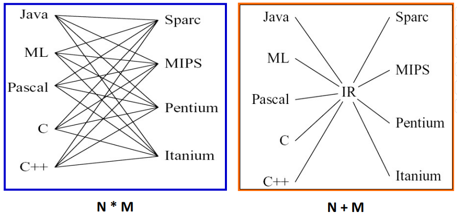
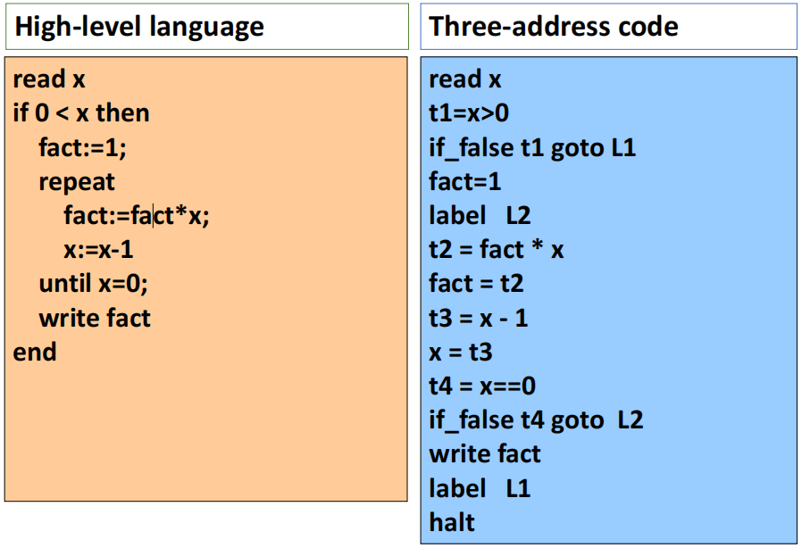
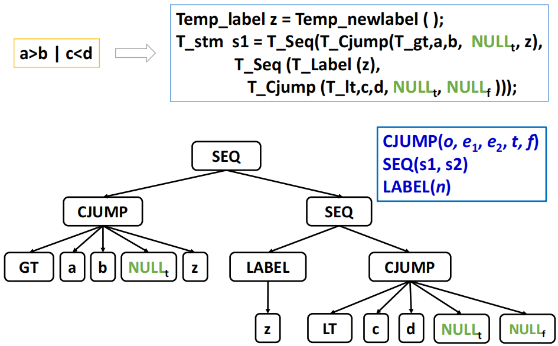
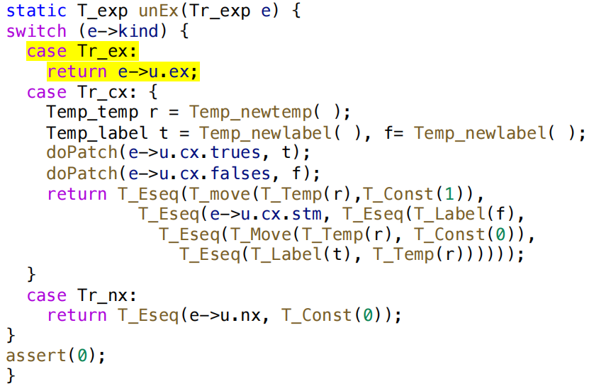
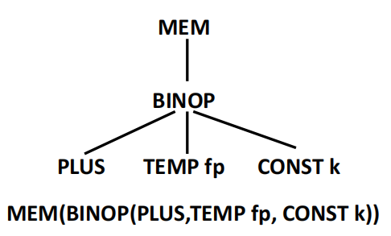
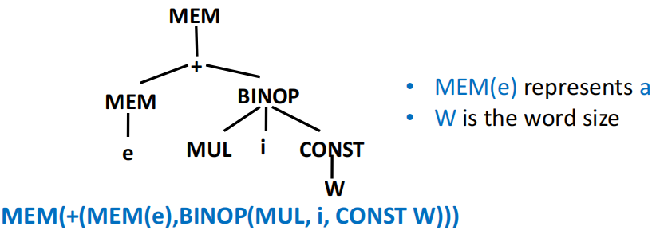
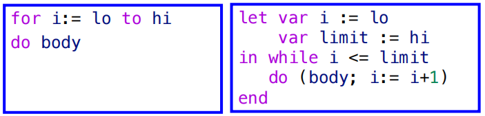

Intermediate Code Generation¶
约 3771 个字 26 行代码 7 张图片 预计阅读时间 15 分钟
中间表示（intermediate representation）是介于源代码和目标代码之间的一种抽象表示形式，通常用于编译器的优化和代码生成阶段。
为什么需要中间表示？
假如我们直接将 AST 翻译为目标机器码，这会导致两部分的内容高度耦合，编译器的设计和实现会变得非常复杂。
- 假设有 N 中源语言，M 种目标机器，那么每一种组合都需要单独进行翻译，需要处理 N × M 种情况
- 而当我们引入中间表示之后，我们只需要将 N 种源语言翻译为中间表示，然后再将中间表示翻译为 M 种目标机器码，这样就只需要处理 N + M 种情况，大大简化了编译器的设计和实现。

我们可以把 IR 视作一种抽象的机器语言：
- 它可以表达目标机器的各种操作，而无需关注特定机器的细节
- 同样的，IR 也不依赖于源语言的特定特性，因此可以被多种源语言使用
- IR 有多种形式，包括 expression trees、three-address code、static single assignment (SSA) 等等
- 一个编译器中可以使用多级的 IR 来进行不同程度的抽象和优化
显然，IR 的这些特点使得 IR 具有模块化和可移植性的优势
front end 和 back end
我们可以把编译器的设计分为两部分：
- front end：负责将源代码翻译为 IR 的部分，通常包括词法分析、语法分析、语义分析等
- back end：负责将 IR 翻译为目标机器码的部分，通常包括 IR 优化、把 IR 翻译为机器指令、寄存器分配等
有时候我们也会把 IR 优化和寄存器分配等过程单独划分为一个中间阶段，称为 optimizer 或 middle end，它位于 front end 和 back end 之间。
Three-Address Code¶
三地址码（three-address code）是一种常见的 IR 形式，它使用一个简单的指令格式来表示程序的操作。每条三地址码指令通常包含一个操作符和最多三个操作数，例如：
我们称这些操作数为地址，地址可以是源代码中的变量名、常量、编译器生成的临时变量（例如 t1、t2 等）或
通常而言，我们都可以很轻易地把源语言的表达式改写为三地址指令的序列，例如 2*a + (b-3) 就可以被翻译为：
三地址码没有统一的标准格式，其原因在于不同源语言可能具有不同的特性和语义，因此需要不同的指令形式来表达。
Example

上面这个例子并不复杂，我们可以很轻易地看出源语言代码和三地址码序列之间的对应关系。
三地址码都以一个链表或数组的形式实现，最常见的实现方式是将其作为一个四元组实现：第一个字段是操作符，后三个字段分别是三个操作数。对于不需要三个操作数的指令，我们可以把不需要的操作数设置为 null 或者省略掉。
其他的实现方式还有三元组（triple）和间接三元组（indirect triple）等等，这些实现方式各有优缺点，编译器设计者可以根据具体的需求选择合适的实现方式。
Intermediate Representation Tree¶
一个好的 IR 应当具有以下几个特点：
- 便于在语义分析阶段生成
- 便于被翻译到各种实际的机器语言
- 每个构造都必须具有清晰简洁的含义
- IR 的优化转换可以方便地指定和实现
IR 的核心思想是每一个独立组件都只做一件简单的事情：取数、存数、做加法、移动（move）、跳转（jump）等等，这些组件可以被组合成更复杂的操作。
翻译只做两件事情：
- 若干任意的抽象语法 \(\to\) 正确的 IR 指令集合
- IR 指令集合 \(\to\) 目标真实机器指令集合
Expressions (T_exp)¶
表达式（expression）是指计算某个数值的过程，可能伴随着副作用
| 节点 | 含义 |
|---|---|
CONST(i) |
整数常量 i |
NAME(n) |
符号常量 n（汇编标签） |
TEMP(t) |
临时变量 t（即虚拟寄存器） |
BINOP(o, e1, e2) |
对 e1、e2 施加二元操作 o（包括 PLUS, MINUS, MUL, DIV, AND, OR, XOR, LSHIFT, RSHIFT, ARSHIFT） |
MEM(e) |
从地址 e 开始的 wordSize 字节大小的内存内容。作为 MOVE 的左孩子时表示 store，其他所有情况下都表示 fetch |
CALL(f, l) |
函数调用：将函数 f 应用于参数列表 l，从左到右进行求值 |
ESEQ(s, e) |
先执行语句 s（可能会产生副作用），再对表达式 e 求值作为结果 |
Statements (T_stm)¶
语句（statement）执行副作用和控制流，没有返回值
| 节点 | 含义 |
|---|---|
MOVE(TEMP t, e) |
计算 e，把结果移入临时变量 t |
MOVE(MEM(e1), e2) |
计算 e1 得到地址 a，然后计算 e2，将结果存入从 a 开始的大小为 wordSize 的内存里 |
EXP(e) |
计算表达式 e 并丢弃结果 |
JUMP(e, labs) |
跳转到地址 e（可以是 NAME(label) 或经过计算得出的地址） |
CJUMP(o, e1, e2, t, f) |
按顺序计算 e1、e2，用关系运算符 o 比较两个结果。若是 true 则跳转到标签 t 处，若是 false 则跳转到 f 处 |
SEQ(s1, s2) |
语句 s1 后接着 s2 |
LABEL(n) |
定义符号 n 的常量值为当前机器码地址（NAME(n) 是在使用符号 n，LABEL(n) 是在定义符号 n） |
Translation into IR Trees¶
在这一步里，我们得翻译操作是将抽象语法表达式节点 A_xx 翻译为 IR 树节点 T_xx
Expressions¶
表达式（expression）有三种类型，它们在抽象语法树和 IR 树中对应的节点类型如下：
| AST 节点 | IR 表示 | 含义 |
|---|---|---|
Ex |
T_exp |
有返回值的表达式 |
Nx |
T_stm |
无返回值的表达式（如某些过程调用、while） |
Cx |
T_stm + true/false 跳转标签 |
有布尔值的表达式，可能会产生跳转 |
具体的数据结构实现示例如下：
Back Patching¶

一个简单布尔表达式 a < b | c < d 可以被翻译为如上图所示的 IR 树：
- 我们支持短路求值，因此在
a < b为 true 时直接跳转到true标签，在a < b为 false 时则会根据标签z跳转到c < d处继续判断 - 由于我们在这个布尔表达式里还不知道具体的 jump 目标地址，因此暂时将这些地址设置为 NULL，带等待后续的回填（back patching）阶段来填充这些地址
- 我们需要两个回填列表：true patch list 和 false patch list
- 我们可以把若干个布尔表达式通过逻辑运算符连接起来
a < b | c < d：在a < b的 falses 跳转地址上回填c < d的 labela < b & c < d：在a < b的 trues 跳转地址上回填c < d的 label
Conversion between Ex, Nx, Cx¶
有时我们还需要把某种表达式转换为等效的另一种表达式，例如 flag = (a < b) 就需要把 a < b 这个 Cx 转换为 Ex 来进行赋值操作。
以 unEx(Tr_exp e) 函数为例，这个函数的作用是把任意的 Tr_exp 转换为 T_exp：
- 当
e是Tr_ex时，直接返回e->u.ex - 当
e是Tr_nx时，返回一个 ESEQ，其中包含了e->u.nx这个语句和一个默认值 0 的表达式 - 当
e是Tr_cx时，返回一个 ESEQ，其中包含了e->u.cx.stm这个语句和一个默认值 1 的表达式，根据结果是 true 还是 false 的不同，跳转到e->u.cx.trues或e->u.cx.falses这两个标签中的一个

Simple Variables¶
对于一个定义在当前函数的栈帧中的局部变量，我们可以把它翻译为如下所示的 IR 树：

- k 是变量在当前帧中的偏移量
- fp 是指向当前帧的指针
回顾上一章的内容，我们知道 Semant 模块不应直接调用 Tree 或 Frame 模块，所有对 IR 树的操作都应该由 Translate 模块来完成：
Semant 模块会传入变量的 access（通过 Tr_allocLocal 函数获取），以及使用这个变量的函数的嵌套深度 level
要翻译变量 v，我们需要知道帧指针以及 word size 的大小，以便于 Translate 模块使用 F_exp 函数来将 access 转为 Tree expression。
| frame.h | |
|---|---|
Array Variables¶
不同语言对数组变量的处理不同：
- Pascal：数组变量代表数组内容。
a := b会拷贝整个数组。
- C：数组类似于“指针常量”，它本身不能被赋值，但它指向的内容可以被修改。
- Tiger / Java / ML：数组变量行为像指针。
- 新的数组值可以通过形如
intArray[n] of i的表达式来构造。 - 数组之间的赋值实际是指针之间的赋值（修改指针指向的地址），不会修改数组内容。
- 新的数组值可以通过形如
Tiger 中的 record 也是指针，record 之间的赋值同样是指针赋值，而不是内容赋值。
Structured L-Values¶
- 左值 (L-value)：可以出现在赋值语句的左侧，表示一个可赋值的位置。如
x、y.p、a[i+2]。 - 右值 (R-value)：只能出现在赋值语句的右侧，不表示可赋值位置。如
a + 3、f(x)。
在 C 和 C++ 的课程中我们已经对 L-value 和 R-value 很熟悉了，就不展开解释了。
在 Tiger 中，所有的变量和左值都是标量（scale）
- 数组和 record 变量实际上都是指针，因此也是一种标量
Tip
在 C 或 Pascal 等语言中还存在结构化左值，例如 C 中的结构体和 Pascal 中的数组变量，它们并不是标量。
如果我们还考虑翻译结构化左值，我们就需要对 T_Mem 函数进行扩展：
对应的 IR 语法为 Mem(+(TEMP fp,CONST kn), S) 其中 k 是变量在当前帧中的偏移量，S 是变量的大小（对于数组和 record 来说可能大于 word size）。
Subscripting and Field Selection¶
-
我们可以通过以下的方式来计算一个数组元素
a[i]的地址：a：数组元素的基地址l：索引范围的下界s：每个元素的字节大小
如果 a 是全局变量的（编译时就拥有一个确定的常量地址），那么
a - s × l就可以在编译时完成计算。 -
我们可以通过
r + offset(f)来计算一个 record 变量的字段 f 的地址，其中offset(f)是字段 f 在这个 record 中的内部偏移量。
因为数组变量 a 是一个左值，因此数组下标表达式 a[i] 的结果也是一个左值。要想得到 a[i] 的地址，我们需要对 a 的地址进行算术运算
在 Tiger 中所有的 record 和数组变量其实都是指向 record 或数组结构的指针，因此需要 MEM 运算符来访问它们的内容
a[i] 的 IR 树如下所示：

从技术上来讲，一个左值应当被表示为一个地址（就是上图中去掉 MEM 节点之后的部分），当我们需要访问这个左值的内容时才会使用 MEM 运算符来访问这个地址上的内容。
Arithmetic¶
在 Tiger 语言里
- 每一个整数算术运算都对应于一个 Tree 的 BINOP 操作符节点
- 没有一元运算符：一元取反操作用
n = 0 - n来实现，取补码通过和全 1 的异或来实现 - 没有浮点数：浮点数的取反不能直接用
0 - f来实现（许多浮点数表示方法都支持负零），但好在 Tiger 语言里没有浮点数
Conditionals¶
对比较运算符的翻译结果是一个 Cx 表达式，这个表达式包含了一个 T_stm 语句和两个回填列表（true 和 false）
当我们遇到形如 if e1 then e2 else e3 的 if 表达式时，可以通过比较直观的方式来翻译它：
- e1 是一个 Cx 表达式，需要对它应用
unCx函数 - e2 和 e3 都是 Ex 表达式，需要对它们应用
unEx函数 - 设置一个临时变量
r来存储 if 表达式的结果，根据 e1 的真假来决定r的值是e2还是e3
Tip
我们也可以通过更优化的方式来翻译 if 表达式：
- 如果 e2 和 e3 都是 statement（没有返回值），继续使用 unEx 来翻译它们也可以，但是更好的办法或许是针对这种情况做特殊处理
- 如果 e2 或 e3 为 Cx 表达式，直接用
unEx来翻译会生成一大堆混乱的跳转和标签，应当对这种情况做特殊处理
While Loops¶
while 循环的大致结构如下：
- 当出现 break 语句时，我们需要在循环体内把它翻译为
goto done。 - 为了知道 done label 在哪里，我们就需要在翻译 while 循环时把 done 标签传递给循环体的翻译函数
transExp，从而跳转到最近的一个外层循环的 done 标签。
For Loops¶
对 for 循环的最简单处理方法是先把它重写为一个 while 循环，然后再按照 while 循环的方式来翻译它：

但是这里还有一个小问题：当 limit = maxint 时，i + 1 出现整型溢出，i <= limit 这个条件永远为 true，因此这时我们不应该把 goto done 的条件设置为 i > limit（即 !(i <= limit)），而应该设置为 i >= limit：
Function Call¶
翻译函数调用 f(a1, ..., an) 很简单，只需添加静态链接作为隐式的额外参数即可
- f 是函数的标签
- static_link 是一个指向当前函数的静态父函数的帧指针
Translation of Declarations¶
Declarations¶
在 Tiger 里进行声明会调用 transDec 函数，对帧数据结构进行修改：
- 函数体中的每个变量声明都会在帧中预留额外的空间（位于 FP + offset 处）
- 每个函数声明都会为这个函数的 body 保留一段内存空间来存放相应的代码
Variable Declarations¶
transDec 函数会更新值环境和类型环境，
- 变量初始化会被翻译为赋值表达式，这些赋值表达式对应的 tree expression 必须位于 let 语句的 body 部分之前
- let 语句的形式为
let ... in ... end，其中...部分分别是变量声明和函数声明，以及 let 语句的 body
- let 语句的形式为
- 如果我们把
transDec函数应用于函数和类型声明上，返回值应当是一个“无效”的表达式（例如EXP(CONST(0))）
Function Declarations¶
函数会被翻译为一个“汇编语言片段”，包含前言（prologue）、函数体和后记（epilogue）三个部分：
- prologue：
- 标记函数开始的伪指令（这是特定汇编语言所需的）
- 函数名的 label 定义
- 调整栈指针的指令（分配新 frame）
- 将逃逸参数（包括静态链接）存入 frame，将非逃逸参数移入新的临时寄存器
- 保存所有 callee-save 寄存器（包括返回地址寄存器）的 store 指令
- body：函数体的 IR 树
- 翻译后的表达式
- epilogue：
- 将返回值移至相应寄存器的指令
- 恢复 callee-save 寄存器的 load 指令）
- 重置栈指针的指令（用于释放 frame）
- 返回指令（这是特定汇编语言所需的）
- 根据汇编语言的需要，标记函数结束的伪指令
Fragment¶
Translate 阶段会为每个函数都产生一个 fragment，包含：
- frame：frame 描述符，包含关于局部变量和参数的机器特定信息
- body：函数
procEntryExit1返回的结果